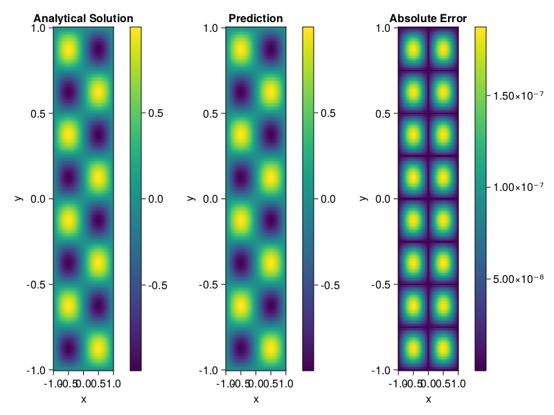

Helmholtz equation
Let us consider the Helmholtz equation in two space dimensions
\[\begin{aligned} &\Delta u(x, y)+k^{2} u(x, y)=q(x, y), \quad(x, y) \in \Omega:=(-1,1)^2 \\ &u(x, y)=0, \quad(x, y) \in \partial \Omega \end{aligned}\]
where
\[q(x, y)=-\left(a_{1} \pi\right)^{2} \sin \left(a_{1} \pi x\right) \sin \left(a_{2} \pi y\right)-\left(a_{2} \pi\right)^{2} \sin \left(a_{1} \pi x\right) \sin \left(a_{2} \pi y\right)+k^{2} \sin \left(a_{1} \pi x\right) \sin \left(a_{2} \pi y\right).\]
The excat solution is $u(x,y)=\sin{a_1\pi x}\sin{a_2\pi y}$. We chose $k=1, a_1 = 1$ and $a_2 = 4$.
using ModelingToolkit, IntervalSets, Sophon, Lux
using Optimization, OptimizationOptimJL
@parameters x,y
@variables u(..)
Dxx = Differential(x)^2
Dyy = Differential(y)^2
a1 = 1
a2 = 4
k = 1
q(x,y) = -(a1*π)^2 * sin(a1*π*x) * sin(a2*π*y) - (a2*π)^2 * sin(a1*π*x) * sin(a2*π*y) + k^2 * sin(a1*π*x) * sin(a2*π*y)
eq = Dxx(u(x,y)) + Dyy(u(x,y)) + k^2 * u(x,y) ~ q(x,y)
domains = [x ∈ Interval(-1,1), y ∈ Interval(-1,1)]
bcs = [u(-1,y) ~ 0, u(1,y) ~ 0, u(x, -1) ~ 0, u(x, 1) ~ 0]
@named helmholtz = PDESystem(eq, bcs, domains, [x,y], [u(x,y)])\[ \begin{align} \frac{\mathrm{d}}{\mathrm{d}y} \frac{\mathrm{d}}{\mathrm{d}y} u\left( x, y \right) + \frac{\mathrm{d}}{\mathrm{d}x} \frac{\mathrm{d}}{\mathrm{d}x} u\left( x, y \right) + u\left( x, y \right) =& - 166.78 \sin\left( 3.1416 x \right) \sin\left( 12.566 y \right) \end{align} \]
Note that the boundary conditions are compatible with periocity, which allows us to apply BACON.
chain = BACON(2, 1, 5, 2; hidden_dims = 32, num_layers=5)
pinn = PINN(chain) # call `gpu` on it if you want to use gpu
sampler = QuasiRandomSampler(300, 100)
strategy = NonAdaptiveTraining()
prob = Sophon.discretize(helmholtz, pinn, sampler, strategy)
@time res = Optimization.solve(prob, BFGS(); maxiters=1000)u: ComponentVector{Float64}(filters = (filter_1 = (bias = [-0.21718019507539538; -0.34949789781873253; … ; -0.8309337072286632; -0.7393068062747541;;]), filter_2 = (bias = [0.6731842993536252; -0.30631189932976044; … ; -1.1974701471183933; 0.28310186045508967;;]), filter_3 = (bias = [-0.695040276905793; 0.8868860140352876; … ; -0.21247336320185925; -0.42306564041037314;;]), filter_4 = (bias = [0.20246248498926422; -0.6703535845105556; … ; 0.33190170635346583; 1.069381190874341;;]), filter_5 = (bias = [0.9256079694230166; 0.8268439162594594; … ; 0.7684861907409839; 0.27853623951093515;;])), linear_layers = (layer_1 = (weight = [-0.29119437942916004 -0.06757140507812014 … 0.1294226696224159 -0.31329394717797915; -0.18311397570828322 -0.4557542226836692 … -0.2590913346674119 -0.17115919763634138; … ; 0.05111516157327376 0.3140531599111306 … -0.3921474874561688 -0.2687128754209771; -0.3424641939161123 0.1281608026544283 … -0.04840603079771465 0.3719682487099839], bias = [0.022079375438245556; -0.021165913920207707; … ; 0.018472542869722153; -0.05166343932827015;;]), layer_2 = (weight = [-0.1904967927189108 0.39777877925310084 … -0.16787629891581096 -0.19655201979965026; -0.18300114679853327 -0.40952230648164456 … 0.07693332932273769 0.2008712970038119; … ; 0.3807260487953801 0.2764044437867646 … 0.16784071023417743 0.15141758451270818; 0.12445509944179312 -0.03298404396857202 … 0.07442958215174005 -0.43597419155825246], bias = [0.007744429999787548; -0.007313288089517354; … ; 0.006716595436968224; -0.002631995102584203;;]), layer_3 = (weight = [-0.027991173925567586 -0.16922599508697497 … -0.2696628311953801 -0.12341145503275401; -0.2788868536232769 0.21153430604302895 … 0.1899070877718726 0.04259437167907096; … ; 0.22203894370388877 -0.1631959839844891 … -0.236742411926903 -0.08440518290258148; 0.34192584112891483 -0.1391394538763847 … -0.24229853911171814 0.2628674659500487], bias = [-0.019784654280668456; 0.0037600909829036597; … ; -0.019338869563849274; 0.0069395688538424405;;]), layer_4 = (weight = [-0.24701610752554368 -0.4101691204556451 … 0.1462616607828059 -0.21610672649059737; -0.40204815834191715 -0.3221073566066792 … 0.25197925867616056 0.038290343213832394; … ; 0.39583914701568196 0.20287796143369063 … -0.1099415097717694 0.34425915971676463; -0.1568390501029605 0.003460401898900449 … -0.1437093824467545 0.17558454761009912], bias = [-8.009331369761122e-5; 0.0002970124545580085; … ; -0.007653752463459698; -0.005889897676898614;;])), output_layer = (weight = [-0.25805541666967413 0.1979025913212883 … -0.17199874035208884 0.4298349425101645], bias = [-0.06386496582709157;;]))Let's plot the result.
phi = pinn.phi
xs, ys= [infimum(d.domain):0.01:supremum(d.domain) for d in domains]
u_analytic(x,y) = sinpi(a1*x)*sinpi(a2*y)
u_real = [u_analytic(x,y) for x in xs, y in ys]
phi_cpu = cpu(phi) # in case you are using GPU
ps_cpu = cpu(res.u)
u_pred = [sum(phi_cpu(([x,y]), ps_cpu)) for x in xs, y in ys]
using CairoMakie
axis = (xlabel="x", ylabel="y", title="Analytical Solution")
fig, ax1, hm1 = heatmap(xs, ys, u_real, axis=axis)
Colorbar(fig[:, end+1], hm1)
ax2, hm2= heatmap(fig[1, end+1], xs, ys, u_pred, axis= merge(axis, (;title = "Prediction")))
Colorbar(fig[:, end+1], hm2)
ax3, hm3 = heatmap(fig[1, end+1], xs, ys, abs.(u_pred-u_real), axis= merge(axis, (;title = "Absolute Error")))
Colorbar(fig[:, end+1], hm3)
fig